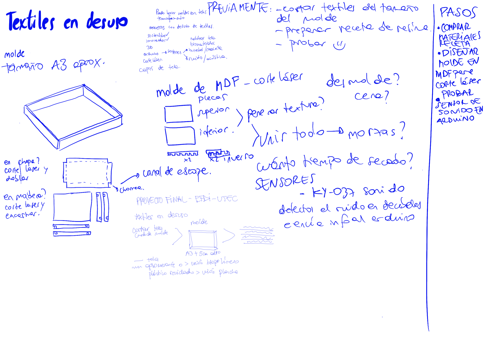
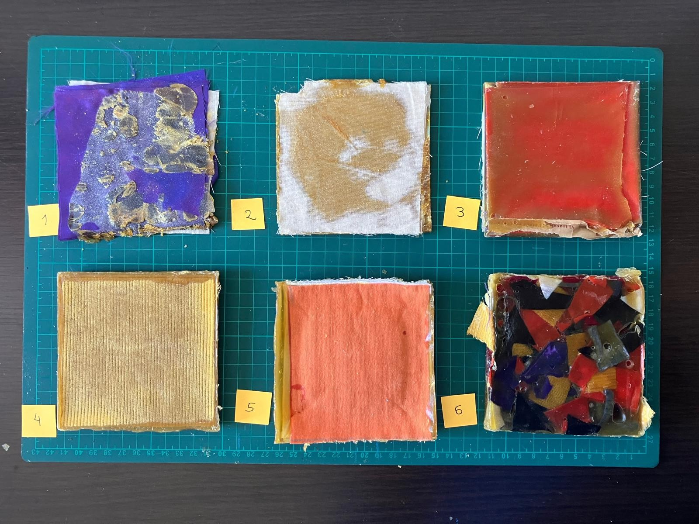

PF01-02 PROYECTO FINAL¶
Proyecto final¶
Introducción¶
Acá documentaré el proceso de este proyecto integrador final que fui haciendo hasta el momento.
Subiré la presentación luego del 19 de diciembre.
¿cómo nacen los objetos? Metodología de Bruno Munari compartida por Edgardo

Documentación del proceso¶

Recolección de Materiales
Comencé recolectando telas en desuso de prendas que ya no utilizaba.
1. Selección y Clasificación de Telas
Seleccioné distintos tipos de telas y realicé una muestra para determinar su composición mediante la técnica del quemado. Las clasifiqué como tejidos de punto y tejidos planos. (Tiempo: 30 minutos)

2. Preparación de Muestras
Creé un molde de cartón tamaño A4 para cortar las telas en esa medida. Por cada tela, corté dos capas, logrando un total de 10 tipos de tela diferentes (naturales y sintéticas). (Tiempo: 1 hora y media)

Luego, recorté las telas en piezas de aproximadamente 10x10 cm. Cada tela resultó en 12 capas debido a las diferencias de espesor. (Tiempo: 1 hora)

3. Preparación de Moldes
Construí un molde de 11x11 cm y 5 cm de altura, suficiente para acomodar las capas de tela cortadas. Además, elaboré varios moldes de papel manteca para evitar que las piezas se pegaran al molde de cartón. (Tiempo: 30 minutos)

4. Preparación de la Receta de Resina
Materiales preparados:
Olla, papel manteca, molde, resina de pino, cera, alcohol, jeringa, balanza, recipiente, cuchara, nylon para cubrir la superficie de trabajo.

Proceso de Fabricación
1. Primera Prueba
Medí 50 g de resina y 15 ml de alcohol, llevé la mezcla al fuego y añadí 5 g de cera.
Intenté unir las capas con un pincel, pero la mezcla se secó demasiado rápido y la resina se quebró.
2. Segunda Prueba
Medí 50 g de resina y 15 ml de alcohol, llevé la mezcla al fuego y añadí 5 g de cera.
A diferencia de la primera, volqué el líquido de la receta directamente sobre la tela. Mejoró pero se quebraba.
3. Tercera Prueba
Ajusté las proporciones y las multipliqué: 100 g de resina, 50 ml de alcohol y 8 g de cera.
Utilicé la mezcla directamente desde la olla, aplicándola entre las capas. Dejé secar 30 minutos. El resultado mejoró, aunque no se logró cubrir todas las capas de tela.
4. Cuarta Prueba
Utilicé las mismas proporciones que la prueba anterior.
Colocaba las capas de tela en pares, esta vez seleccionando un material con mezcla de fibras naturales y sintéticas de mayor espesor. Dejé secar una hora.
5. Quinta Prueba
Utilicé las mismas proporciones que la prueba anterior.
Colocaba las capas de tela en pares, esta vez seleccionando un material con mezcla de fibras naturales y sintéticas de mayor espesor. Dejé secar una hora.
6. Sexta Prueba
Con las mismas proporciones de resina, añadí retazos irregulares de 2x2 cm al molde.

Investigación sobre paneles acústicos
Tipos de paneles acústicos y su función:
Paneles absorbentes:
Absorben las ondas sonoras para evitar que reboten y vuelvan al ambiente, mejorando el aislamiento acústico.
Paneles difusores:
Dispersan las ondas sonoras para distribuirlas de manera uniforme en el espacio, evitando ecos y concentraciones de ruido.
Referencias
Materiales reciclados aislántes
Paneles acústicos Akoomi
Patrones de paneles acústicos
Diferentes paneles acústicos
Paneles de madera perforada
Pelusa de tela reciclada
Paneles acústicos de PET
PASOS A SEGUIR:
Ajuste de proporciones y pruebas de tamaño: Refinar la receta de resina de pino para lograr un mejor resultado al trabajar con piezas más grandes de textiles. Crear moldes adecuados para placas más amplias y probar cómo las proporciones afectan el rendimiento final.
Corte láser y diseño de porosidad: Incorporar técnicas de corte láser para dar forma a las placas y generar porosidad. Realizar pruebas específicas para evaluar cómo reaccionan las composiciones de textiles y la resina de pino durante el corte láser, diferenciando entre textiles sintéticos y naturales.
Evaluación del material: Medir la resistencia, flexibilidad y durabilidad de las placas fabricadas.
Realizar pruebas acústicas para determinar su capacidad como absorbente o difusor de sonido.
Prueba de sensores: Integrar un sensor de ruido para evaluar su funcionamiento en combinación con las placas acústicas
Anexos¶
Lineamientos de EFDI-UTEC
Especialización en Fabricación Digital e Innovación
Proyecto final integrador
Esta unidad curricular (PF01 - PF02) corresponde al proyecto final integrador. Los y las participantes deberán aplicar los conocimientos adquiridos en todos los módulos cursados durante la Especialización.
Objetivos:
El proyecto final tiene como objetivo principal la aplicación práctica de los conocimientos adquiridos en las áreas de Tecnología y fabricación, Diseño, e Innovación y sostenibilidad.Los objetivos específicos del proyecto final son los siguientes:
- Tecnología y fabricación
Desarrollar y aplicar habilidades técnicas en el uso de tecnologías de fabricación digital para la creación de prototipos y productos finales en un laboratorio de innovación. - Diseño
Diseñar soluciones distribuidas y sostenibles basadas en metodologías de innovación, utilizando un modelo de gestión colaborativa que fomente la co-creación interdisciplinaria. Identificar y desarrollar oportunidades que mejoren las condiciones sociales y de vida en general de la comunidad, con un impacto positivo tanto a nivel local como global. - Innovación y sostenibilidad
Identificar y aplicar métodos alternativos de producción enfocados en economías circulares, proponiendo soluciones concretas y sostenibles para productos y/o servicios. - Evaluar y demostrar el impacto sostenible del proyecto, asegurando que las soluciones propuestas contribuyan a la sostenibilidad ambiental y social.
Requisitos mínimos:
- Innovación abierta. Dar respuesta a problemáticas actuales y locales, considerando aspectos sociales, económicos y ambientales, fruto de utilizar herramientas, el diseño y metodologías de cocreación.
- Generar un prototipo funcional, construido con herramientas de fabricación digital. El proyecto debe incorporar diseño 2D y 3D, procesos de fabricación aditivos y/o sustractivos, electrónica y programación.
- Diseño distribuido, abierto y sostenible. Brindar herramientas para la identificación de métodos alternativos de producción enfocados en economías circulares que apunten a soluciones concretas y sostenibles para productos y/o servicios.
Presentaciones finales
Las presentaciones finales serán el 19 de Diciembre a las 10hs Uruguay por la plataforma zoom, cada estudiante deberá presentar en 10 minutos aproximadamente el trabajo realizado para el proyecto final en el siguiente formato:
Documentar el proceso que realizaste para idear y fabricar tu proyecto final en tu página web respondiendo:
¿Qué hace?
¿Cómo llegaste a la idea?
¿Quién lo ha hecho de antemano? (referencias si las hay)
¿Qué diseñaste?
¿Qué materiales y componentes se utilizaron?
¿Qué partes y sistemas se fabricaron?
¿Qué procesos se utilizaron?
(aditivos, sustractivos etc.)
¿Qué preguntas se respondieron?
¿Qué funcionó? ¿Qué no?
¿Cuáles son las conclusiones?
¿Cuáles son los pasos a seguir?
Al final de la documentación agregar una diapositiva de resumen y un video de un minuto que muestre su concepción, construcción y operación:
El slide debe ser de 1920x1080px y ser en formato png. El video debe durar un 1 minuto aproximadamente.
Evaluación:
Nivel académico 20% > Actitud académica en general, documentación, presentación.
Innovación abierta 20% > Respuesta a problemáticas actuales y locales.
Diseño integrado / honesto 30% > Uso de la tecnología de manera significativa en relación a los temas que plantea, sostenible.
Aplicación fabricación digital 30% > El proyecto debe incorporar diseño 2D y 3D, procesos de fabricación aditivos y/o sustractivos, electrónica y programación.
Plazos de entrega
El documento del proyecto debe ser entregado para el 19 de diciembre a las 23:59 horas de Uruguay en el espacio definido en la plataforma EDU.